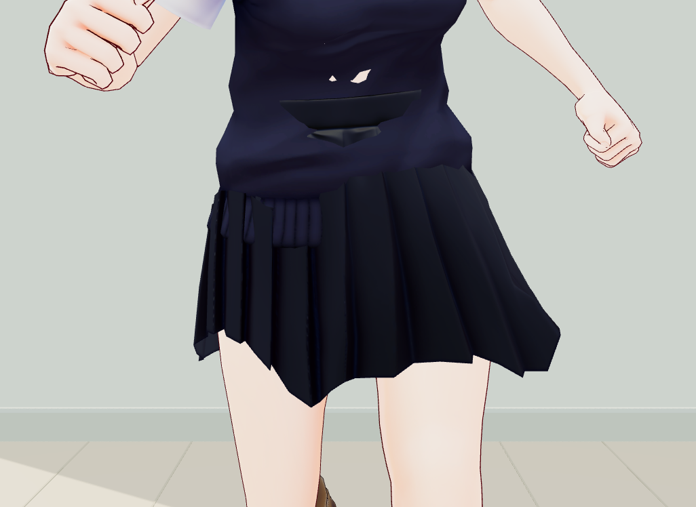
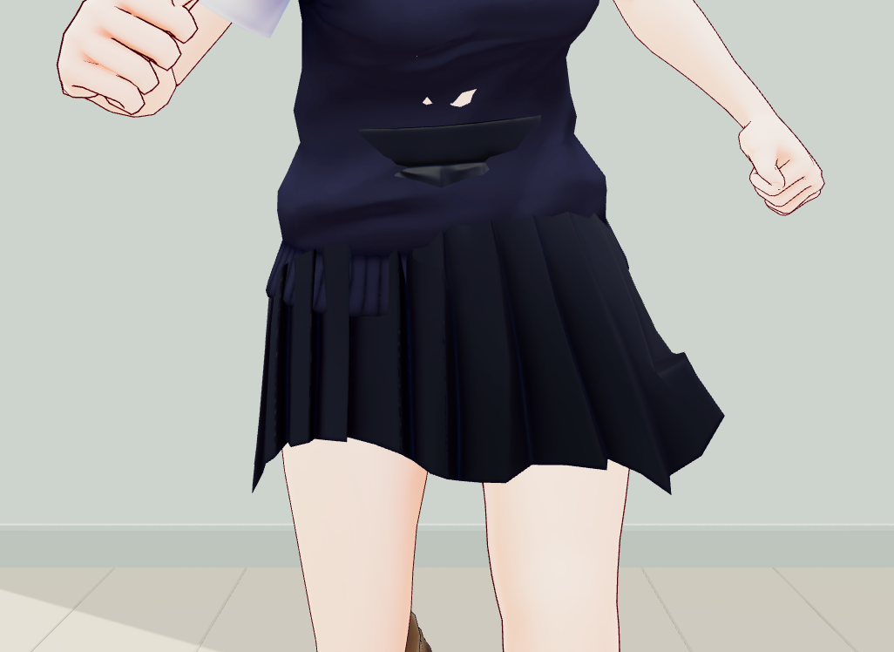

仅原女性裙装；完整原片，正常 1×。与旧 f7 同房间镜头、速度、路线。当前仍有裙形、上衣交叉与旧结构缺陷，不能称整体裙装通过。
坐下→坐稳→起身→360°转身→实际走到空地→完整7.2秒技术舞。技术编排，不是专业舞。19.395秒墙钟、sim/wall 0.996912。
第一条在椅边发舞蹈被空间门正确拒绝，原始失败片保留于 related-video/；不作完整动作通过证据。
各85个实际1/120秒步进；t=0.708333秒，jogPhase=0.03730237。角色相对正/右侧，相机完全相同。a491三角点与测量0误差。这里是静态局部证据，不是原片时间0.708秒。


腹前黑片和白色小孔在旧新均可见。新旧裙上缘/褶皱有变化，交叉不能只按计数忽略；该例交叉线28.46mm不是穿入深度。此前peak-front/side图片按世界+Z/+X相机命名，不代表角色正侧，且对应approach-sit期间仍是walk、sitProgress0，详见contact/screenshot-provenance.json。